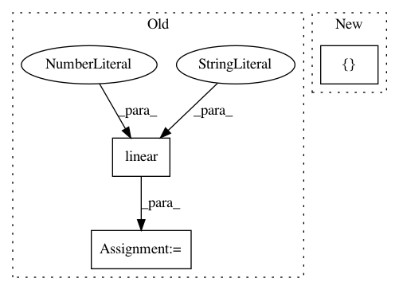

c6289f5ca0af8af688caba047f14cc8fa2a09f9d,hypergan/graph/graph.py,Graph,discriminator,#Graph#Any#Any#Any#Any#Any#,43
Before Change
d_fake = tf.slice(net, [single_batch_size, 0], [single_batch_size, -1])
num_classes = config["y_dims"]+1
if config["y_dims"] == 1:
net = linear(net, 1, scope="d_fc_end", stddev=0.003)
class_logits = net
gan_logits = tf.squeeze(net)
else:
net = linear(net, num_classes, scope="d_fc_end", stddev=0.003)
class_logits = tf.slice(net, [0,1], [single_batch_size*2,num_classes-1])
After Change
df_class=tf.slice(class_logits, [single_batch_size, 0], [single_batch_size, num_classes-1])
df_logits=tf.slice(gan_logits, [single_batch_size], [single_batch_size]),
return [dr_class,dr_logits,df_class,df_logits, last_layer, d_real, d_fake]
def split_categories(layer, batch_size, categories):
start = 0
In pattern: SUPERPATTERN
Frequency: 3
Non-data size: 3
Instances
Project Name: HyperGAN/HyperGAN
Commit Name: c6289f5ca0af8af688caba047f14cc8fa2a09f9d
Time: 2017-02-02
Author: mikkel@255bits.com
File Name: hypergan/graph/graph.py
Class Name: Graph
Method Name: discriminator
Project Name: HyperGAN/HyperGAN
Commit Name: bf5a658ee5bb3cdfe6eb2ec92467610b522aa70f
Time: 2017-03-07
Author: martyn@255bits.com
File Name: examples/wordvec-to-word.py
Class Name:
Method Name: g_resize_conv_create
Project Name: HyperGAN/HyperGAN
Commit Name: a02527e58d09b7f86575f5b790db1fa9dbc8e4e6
Time: 2016-10-29
Author: martyn@255bits.com
File Name: lib/gan.py
Class Name:
Method Name: discriminator